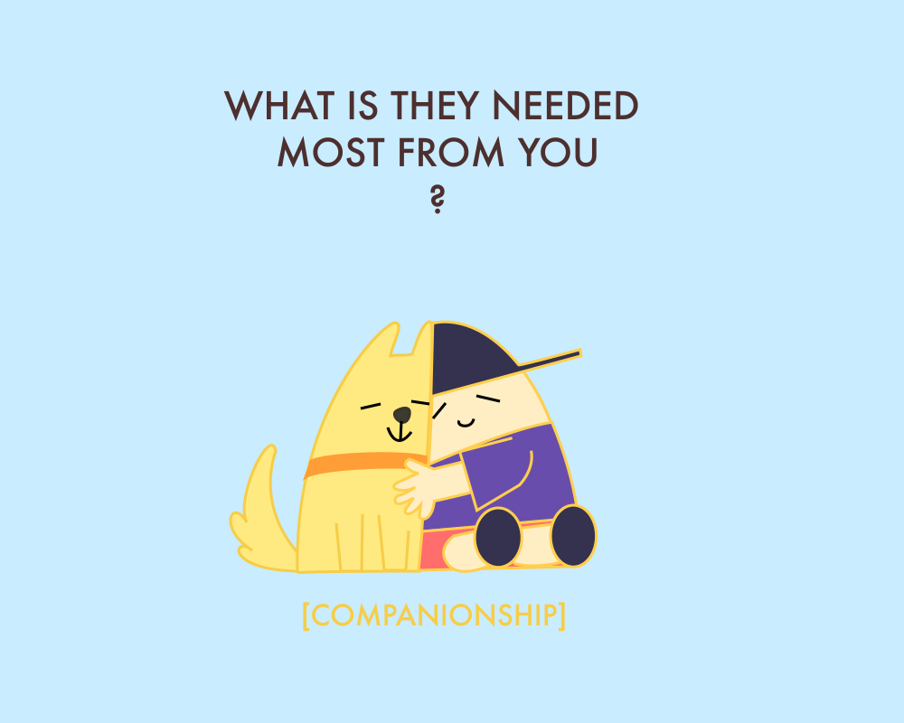
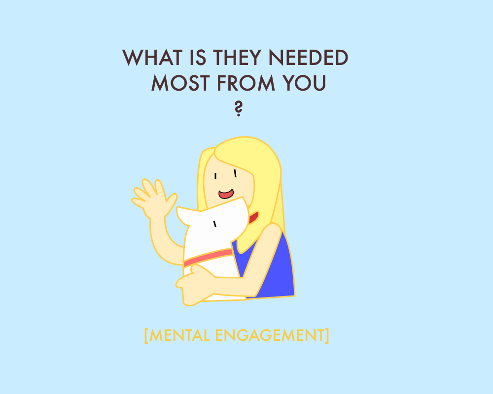
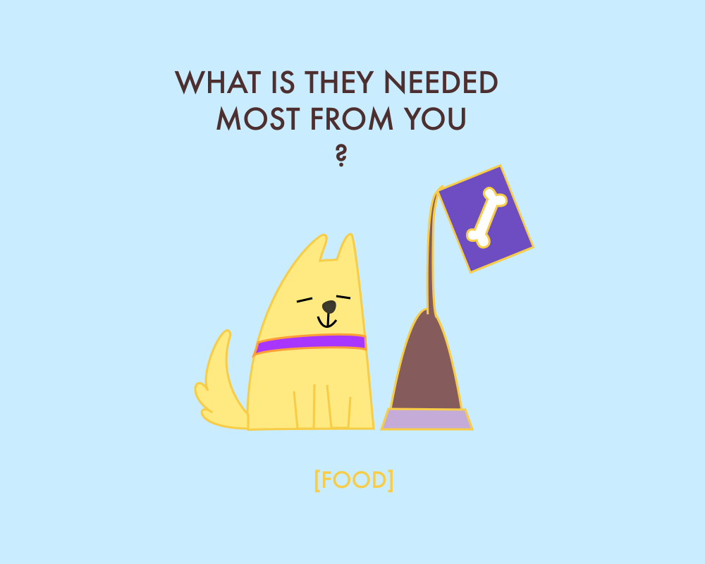
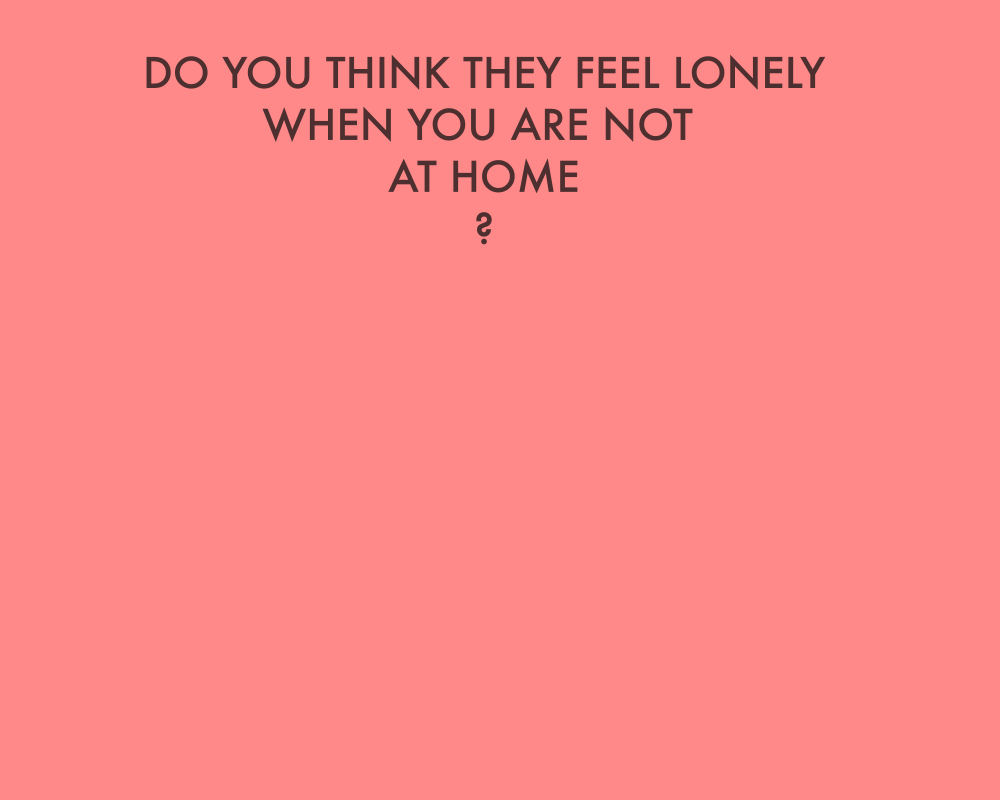
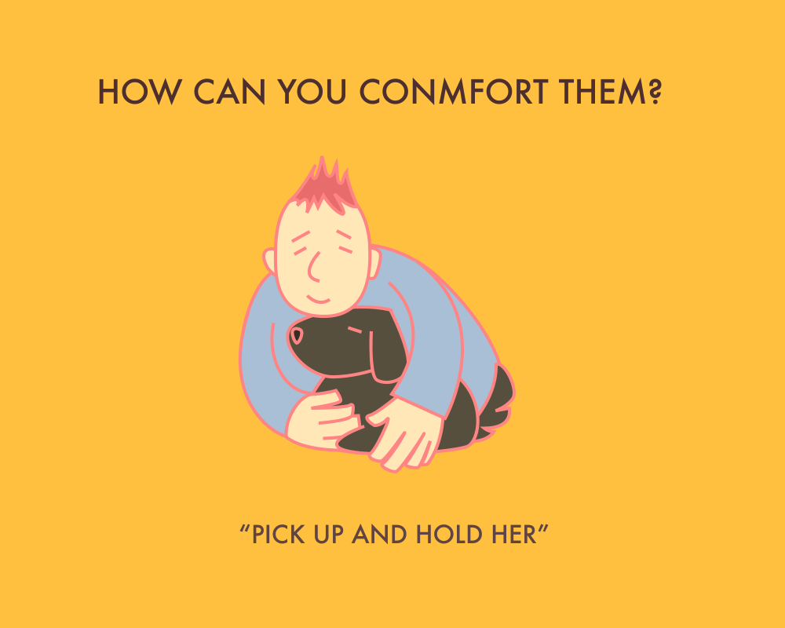
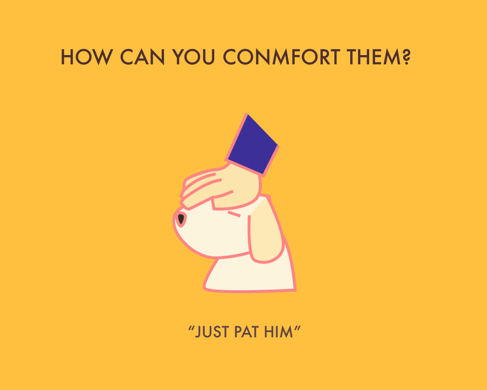
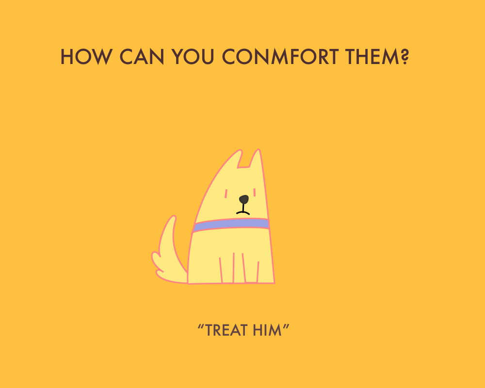

James opens eyes
Finds himself in a unfamiliar room
He knows he have some
memory disease
since some accident
He knows he was a office clerk
He knows he has family
He knows used to live in a little apartment in Brooklyn
But he do not know
where is this place
and if here safe
He feels Anxious
and confused
and helpless
and frightened
He starts Searching
Cellphone cashes keys
Suddenly
He finds something is blinking
It is his ring
The structure of decoration on that ring
is really familiar
It reminded him of the structure of the old house he lived
Meanwhile, his cellphone Make some noise
with the blink
And there is an APP which has the similar
style with the
structure of his ring
Open that app
James’ Memory Palace
Tutorial
AR scan the ring
He saw 3D object which represent different things he have to do today
They are located in different 'rooms'
so that he can walk along in his house, pick up objects and remember things
He pick up the newspapers,
Heat the lunch,
Water the flowers……
Oops, forgot the next thing
It will BLINK in the certain time
and he just need to Check them on the phone
‘It helped me’
James opens eyes
Finds himself in a unfamiliar room
In the process of brainstorming and exploring my domains, I found the concept ‘cognitive enhancement’ and I think it would be fun to combine this domain with human-animals interaction (which I did in the 5 in 5 project). One of my friend told me that she was in bad mood these days and her cats somehow are able to feel it and even try to stay with her and comfort her when she was in depression. It seems quite common that our pets can sense our feeling through their sensitive sense of hearing, vision and smelling while it is still very hard for human beings to sense theirs. I started thinking find some new ways to let people communicate or interact with pets. If we can feel like how they feel would we be able to understand them better? Cognitive enhancement might help people have more sensitive senses just like animals and allow us to rebuilt a way of communication with animals. Considering the problems about human-animals interaction, another common problem went to my mind: many pets have to stay in home alone boringly for a long time before their owner come back from work. If we can interact with them from far away with some certain installations, the day-time of being alone would be not that difficult for them. So I choose long-distance interaction as the third domain.
Domain: cognitive enhancement, human-animals interaction, long-distance interaction
Research:
I. cognitive enhancement
1 Neuralink (https://www.neuralink.com)
2 NeverMind (https://www.media.mit.edu/projects/nevermind/overview/)
3 Animal vision simulator (http://www.mmichal.com/pages/Animal_Vision_Simulator.html)
II. human-animals interaction
1 technology at the zoo (http://www.sarahwebber.me/tech-at-the-zoo)
2 PawsCam (https://www.indiegogo.com/projects/pawscam-smart-wearable-camera-for-your-dog-dogs#/)
3 Zoolingua (http://zoolingua.com/)
III. long-distance interaction
1 inForm (https://tangible.media.mit.edu/project/inform/)
2 Pillow Talk (http://www.littleriot.com/pillow-talk/)
3 LovePalz (https://www.youtube.com/watch?v=c367RPt-sPU)
Ideas:
1. Communication machine for human (improve senses through cognitive enhancement)
2. Virtual reality for animals
3. Virtual owner for pets (play with them when the owner is not at home)
4. Pets emotions visualization
5. Exchange views with animals
6. Sound/move control game for animals
7. Special symbol system for huaman-animals interaction

The idea I choose to work with is ‘Virtual owner’ which would be a facility allowed owners to interact with their pets when they are not actually in there. As the design, I hope it can create a atmosphere for those lonely pets that owner is accompany them through three main ways. The first one is ‘virtual touch’, when the user touch the controller part the facility would record the pressure, scale and feeling of it and simulate it at another installation which would interact directly with pets. The second way is allowing users to play some simple games with their pets with their cellphone from long-distance. The last one is using the real voice and smell to make it more real.









5d
In 5D, I tried to consider interaction of my project. When I think about the interaction with dogs, the first thing into my mind is that dogs have totally different “narrative mode” with human being. For human, our “narrative” is more about the combination of visual and languages, because the sense of visual is the main way for us to perceive the world. But for dogs the situation is completely different. The have very sensitive sense of smell and it is the most useful way for them to obtain information. From what kind of dog went by to what happened to the floor of cafe, the can easily receive information which is not able to be understand bu human through their smell. They even sense the passage of time and the direction by their smell.
Based on this special character of dogs, I want to create a project that explore the narrative based on smell which would be suitable for dogs to approach. However the difficulty of collecting, analysisinp and reproducing the smell, I haven’t figure out a proper way to create such a product. My plan now is to make a machine which can read and releases different smell on the “smell memory card” and all these cards can tell a simple story or environment which allowed dogs to understand. This would be a species story book without any words or pictures on it for dogs. Though it would be impossible for human to read, I do hope dog owners can be involved in the whole process and “communicate” better with their dogs.